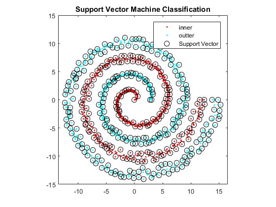

Example 8.1 Support Vector Machine
- Result in book : Figure 8.10
- Code in book : none
- Output : eg08_1.png
- Usage : eg08_1(), eg08_1(400)
Contents
Source Code
function eg08_1(n)
rng(0, 'v5uniform'); rng(0, 'v5normal');
if nargin < 1
n = 400;
end
a = linspace(0, 4 * pi, n / 2);
a = [a a a a];
randin = @(a, b, n, m)...
((a + b) / 2.0 + (b - a) / 2.0 * rand(n, m));
u = [randin(0.7, 1, n, 1); randin(0.8, 1, 2 * n, 1); randin(0.7, 1, n, 1)];
u = [a .* cos(a), (a + pi) .* cos(a)]' .* u;
v = [randin(0.7, 1, n, 1); randin(0.8, 1, 2 * n, 1); randin(0.7, 1, n, 1)];
v = [a .* sin(a), (a + pi) .* sin(a)]' .* v;
x = [u, v];
getlabel = @(name, n) ...
(mat2cell(repmat(name, n, 1), ones(1, n), length(name)));
y = cat(1, getlabel('inner', n * 2), getlabel('outter', n * 2));
SVMModel = fitcsvm(x, y, 'KernelFunction', 'gaussian')
classes = SVMModel.ClassNames;
sv = SVMModel.SupportVectors;
figure('Name', 'SVM Example');
gscatter(x(:, 1), x(:, 2), y);
hold on;
plot(sv(:, 1), sv(:, 2), 'ko', 'MarkerSize', 8);
legend(classes{1}, classes{2}, 'Support Vector');
axis([-13.5, 16.5, -15, 15]); axis square;
title('Support Vector Machine Classification');
saveas(gcf, 'eg08_1', 'png');
end
SVMModel =
ClassificationSVM
PredictorNames: {'x1' 'x2'}
ResponseName: 'Y'
CategoricalPredictors: []
ClassNames: {'inner' 'outter'}
ScoreTransform: 'none'
NumObservations: 1600
Alpha: [385x1 double]
Bias: 0.2265
KernelParameters: [1x1 struct]
BoxConstraints: [1600x1 double]
ConvergenceInfo: [1x1 struct]
IsSupportVector: [1600x1 logical]
Solver: 'SMO'
